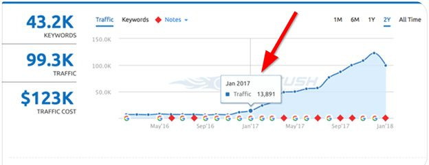
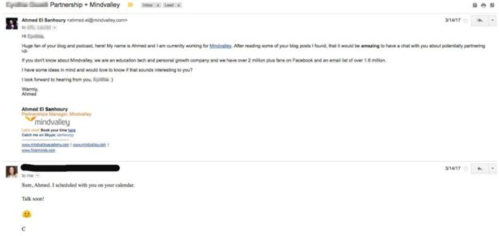

13,891 → 122,718
Monthly organic visits
SEMrush · 11-month window
Organic traffic was 14K monthly visits - negligible for a $40M e-learning company with a massive social presence. Content existed, but there was no SEO architecture, no systematic link building, no outreach. The whole content engine was publishing into the void. Every number on this page names its source; where a figure needs a human decision, it says so.

14K monthly organic visits was negligible for a company of Mindvalley's size and social footprint. There was no SEO architecture, no systematic link building, no outreach strategy - so organic was not a meaningful acquisition channel, no matter how much content shipped.

Monthly organic visits
Source: SEMrush baseline and peak screenshots (both on this page)
Organic visits / month
8.8×
| Metric | Before | After | Source |
|---|---|---|---|
| Monthly organic visits | 13,891 | 122,718 | SEMrush |
| Multiple | - | 8.8× (+771%) | Derived from SEMrush figures |
| Ranking keywords | - | 43.2K | SEMrush · Dec 2017 |
| Outreach reply rate | - | 69% | Growthhacker-cited |
13,891 to 122,718 is a 771% increase (8.8x). The site's "870%" phrasing reads the multiple as if it were the delta - the exact SEMrush figures are used here instead, and the honest phrasing is 8.8x.
NEEDS_HUMAN: SEMrush screenshots are dated 2017; the case sources say 2018-2019 - confirm the era. Also: Growthhacker case-study URL.